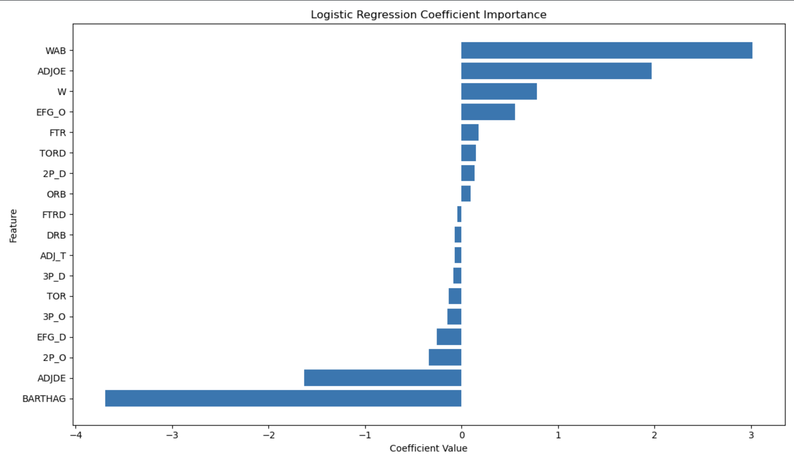

Predicting NCAA Tournament Success from Team Efficiency Metrics
Built a model to predict NCAA Tournament results using advanced team stats like offense, defense, shooting, turnovers, and pace. The model predicts if a team makes the tournament, their seed range, and how far they go. Includes clear charts and feature rankings.
More details
Problem
It is hard to predict NCAA Tournament results. Advanced stats give a better view of team strength, but it is not clear which ones matter most. This project finds which stats best predict who makes the tournament, their seed, and how they perform.
Approach
Collected and cleaned data from multiple seasons. Focused on team stats like offense, defense, shooting, turnovers, and pace. Explored the data to find patterns. Trained models like logistic regression, random forest, and XGBoost. I then ested them with cross-validation. This helped me so I could measure which stats had the most impact.
Results & Impact
The results showed that team resume mattered most. Wins Above Bubble, BARTHAG, and total wins were the strongest predictors in every model. Offensive and defensive efficiency also helped explain success. Logistic Regression was easy to read but less accurate, while Random Forest and the Neural Network gave better overall results by handling more complex patterns. The data had more non-tournament teams, which hurt performance, especially for Logistic Regression. Overall, stronger resumes and solid efficiency stats led to the best predictions.